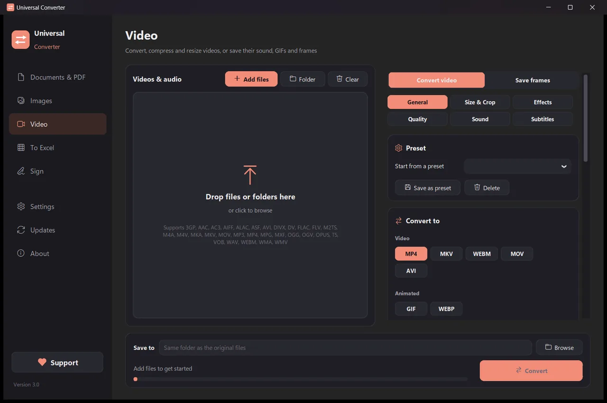

Compress a video without uploading it
Phone videos and screen recordings are often far bigger than they need to be. Universal Converter re-encodes them with modern codecs such as H.265 and AV1, so they take much less space and still look good.
Free · Windows 10 and 11, 64-bit · Virus scan reportWindows blocking the download or the app? Get it from the Microsoft Store instead: the same free app, and Windows trusts it.
Download for Mac Apple silicon, macOS 12 or later
How to install and update
- Open the downloaded .dmg and drag Universal Converter into Applications.
- Open the app. The first time, macOS blocks it because it isn't signed by Apple: click Done.
- Open System Settings > Privacy & Security, scroll down, click Open Anyway and enter your password. You only do this once.
Updates: if you allow it when the app first opens, it checks for new versions each time it starts, verifies their digital signature and installs them when you choose.
Download for Android Android 10 or later
How to install and update
- Tap Download for Android on your phone.
- Open the downloaded file. If Android asks, allow your browser or file manager to install apps.
- Tap Install.
Updates: the app checks about once a day and tells you when a new version is ready. Download it the same way and install it over the old one; your settings are kept.
How to do it
- Open Universal Converter and choose Video on the left.
- Drag your files or a whole folder into the window, or click Add files.
- Pick MP4 and move the quality slider down until the size suits you. Ready-made presets for phones, the web and archiving help.
- Click Convert. The new files are saved next to the originals, or in the folder you choose.

Why do it offline?
Universal Converter does the work on your own device. Your files stay private, big files are no problem, and it works without an internet connection.
More things it can do
- Convert a PDF to Word
- Convert Word documents to PDF
- Combine several files into one PDF
- Compress a PDF to a size you choose
- Convert PDF pages to JPG images
- Turn a scanned document into an editable Word file
- Convert pictures between JPG, PNG, WEBP and more
- Resize pictures or shrink them to a file size
- Combine photos into one PDF
- Copy the text from a picture (OCR)
- Convert videos between MP4, MKV, WebM, MOV and AVI
- Save the sound of a video as MP3
- Make a GIF from a video
- Pull tables from a PDF into Excel
- Convert a bank statement PDF to Excel
- Extract tables from PDF invoices into Excel
- Sign a PDF
- Fill in a PDF form